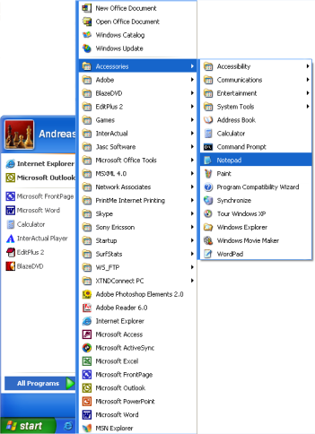

Lição 1: Vamos começar
Nesta primeira lição apresentaremos as ferramentas necessárias à construção de um website.
O que é necessário?
É muito provável que você já tenha as ferramentas que precisa.
Você tem um "navegador". Navegador é um programa que permite visualizar e navegar por páginas na Internet. Você está lendo está página em um navegador.
Não importa qual navegador você usa. O mais comum é o Microsoft Internet Explorer. Mais existem outros, tais como, Opera e Mozilla Firefox que podem ser usados.
Você já deve ter ouvido falar ou até mesmo pode já ter usado programas tais como, Microsoft FrontPage, Macromedia Dreamweaver ou mesmo Microsoft Word, que podem - pelo menos anunciam que podem - criar websites para você. Por ora, esqueça estes programas! Eles não têm qualquer utilidade para você na tarefa de codificar seu website.
Você precisará de um simples editor de textos. Se você tem instalado o Windows, poderá usar o Notepad, que normalmente pode ser encontrado no menu Programs em Accessories (Programas » Acessórios):

Se você não tem o Windows, use um editor de texto similar. Por exemplo, Pico (Linux) ou TextEdit (Mac).
Notepad é um editor de texto básico e simples, mas excelente para codificação, porque não interfere no que você está digitando. Com ele o controle é todo e somente seu. O problema com programas que criam o website para você, é que eles vêm com uma série de funções pré-instaladas para você escolher. Tudo deverá ser projetado para se encaixar nestas funções padrão. Assim, muitas vezes não é possível criar exatamente aquilo que você planejou. Ou - mais frustante ainda - os programas inserem modificações no código que você cria. Usando o Notepad ou qualquer editor de textos simples você é o único responsável pelo acertos ou pelos erros do seu código.
Um navegador e o Notepad (ou editor similar) é tudo o que você precisa para acompanhar este tutorial e construir seu website.
Preciso estar online?
Não. Você não precisa estar conectado à Internet - tanto para ler este tutorial como para construir seus websites.
Se você quer desconetar-se enquanto lê este tutorial, você poderá imprimir ou simplesmente desconectar-se da Internet enquanto lê a tela. Você pode construir seu website no HD do seu computador e fazer o upload para a Internet quando terminar.
O que vem a seguir?
Passe para a próxima lição e leia sobre o HTML antes de começarmos a diversão a partir da Lição 3.